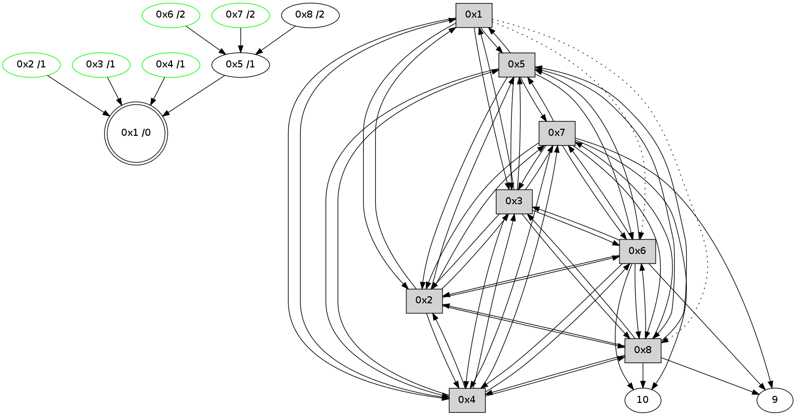

>> << IDX [start] -100 -25 -5 +0 +5 +25 +100 [365.030117035]
 Previous packets
----------------------------------------------------------------------
360.301151 beacon01(11f6) #0 coord=01,02,03,04,05,06,07,08,0a,09 cycle=688.0ms assoc
-- color-indic=0 64 47 56
360.311316 beacon02(11f6) #0 coord=01,02,03,04,05,06,07,08,0a,09 cycle=688.0ms assoc 64 d4 67
360.321286 beacon03(11f6) #0 coord=01,02,03,04,05,06,07,08,0a,09 cycle=688.0ms assoc 64 ae 2a
360.331287 beacon04(11f6) #0 coord=01,02,03,04,05,06,07,08,0a,09 cycle=688.0ms assoc 64 d9 c0
360.341287 beacon05(11f6) #0 coord=01,02,03,04,05,06,07,08,0a,09 cycle=688.0ms assoc 64 a3 8d
360.351286 beacon06(11f6) #0 coord=01,02,03,04,05,06,07,08,0a,09 cycle=688.0ms assoc 64 2d 5a
360.361287 beacon07(11f6) #0 coord=01,02,03,04,05,06,07,08,0a,09 cycle=688.0ms assoc 64 57 17
360.371290 beacon08(11f6) #0 coord=01,02,03,04,05,06,07,08,0a,09 cycle=688.0ms assoc 64 d2 86
360.439641 [Hello(1): seq=176 sym=5,3,2,4 asym=8,6 sysInfo= stat=5:5,0,10,1/3:11,0,10,6/2:5,0,10,6/4:9,0,9,6/8:10,0,9,1/6:6,0,8,5]
360.444402 [STC(1) #0.11 new-neigh,to-color d=0]
360.486620 [STC(5)->1 #0.11 new-neigh,to-color d=1]
360.501292 [STC(8)->5-.->1 #0.11 new-neigh,to-color d=2]
360.505806 [STC(4)->1 #0.11 new-neigh,stable,to-color d=1]
360.509372 [TreeStatus(4)-.->1 #0.11 new-neigh,stable child=1]
360.517506 [STC(3)->1 #0.11 new-neigh,stable,to-color d=1]
360.519454 [TreeStatus(3)-.->1 #0.11 new-neigh,stable child=1]
----------------------------------------------------------------------
361.089289 beacon01(11f6) #0 coord=01,02,03,04,05,06,07,08,0a,09 cycle=688.0ms assoc
-- color-indic=0 64 83 58
361.099446 beacon02(11f6) #0 coord=01,02,03,04,05,06,07,08,0a,09 cycle=688.0ms assoc 64 10 69
361.109424 beacon03(11f6) #0 coord=01,02,03,04,05,06,07,08,0a,09 cycle=688.0ms assoc 64 6a 24
361.119424 beacon04(11f6) #0 coord=01,02,03,04,05,06,07,08,0a,09 cycle=688.0ms assoc 64 1d ce
361.129424 beacon05(11f6) #0 coord=01,02,03,04,05,06,07,08,0a,09 cycle=688.0ms assoc 64 67 83
361.139424 beacon06(11f6) #0 coord=01,02,03,04,05,06,07,08,0a,09 cycle=688.0ms assoc 64 e9 54
361.149424 beacon07(11f6) #0 coord=01,02,03,04,05,06,07,08,0a,09 cycle=688.0ms assoc 64 93 19
361.159431 beacon08(11f6) #0 coord=01,02,03,04,05,06,07,08,0a,09 cycle=688.0ms assoc 64 16 88
361.197810 [Hello(6): seq=176 sym=10,7,5,3,8,4,2,9 sysInfo= stat=10:6,0,7,5/7:14,0,10,5/5:14,0,11,1/3:13,0,11,7/8:8,0,10,1/4:1,0,7,6/2:5,0,10,5/9:0,0,9,2]
361.200809 [STC(6)->5-.->1 #0.11 new-neigh,stable,to-color d=2]
361.202472 [TreeStatus(6)-.->1 #0.11 new-neigh,stable child=1]
361.209784 [Hello(2): seq=176 sym=1,7,5,3,8,4,6 sysInfo= stat=1:15,0,11,0/7:5,0,10,4/5:5,0,11,1/3:6,0,10,5/8:7,0,10,1/4:6,0,10,7/6:12,0,9,6]
361.213637 [STC(2)->1 #0.11 new-neigh,stable,to-color d=1]
361.216266 [TreeStatus(2)-.->1 #0.11 new-neigh,stable child=1]
361.233955 [Hello(3): seq=176 sym=1,2,7,5,6,8,4 sysInfo= stat=1:0,0,11,0/2:6,0,10,7/7:6,0,10,4/5:5,0,10,1/6:2,0,10,6/8:7,0,10,1/4:9,0,10,7]
361.252303 [Hello(4): seq=176 sym=1,2,5,6,3,8,7 sysInfo= stat=1:15,0,11,0/2:7,0,10,6/5:9,0,11,1/6:2,0,10,6/3:12,0,10,5/8:8,0,9,1/7:11,0,10,4]
361.274149 [Hello(8): seq=176 sym=2,7,5,6,3,4,10,9 sysInfo= stat=2:7,0,10,7/7:15,0,10,5/5:13,0,10,1/6:12,0,9,6/3:10,0,11,6/4:7,0,8,6/10:13,0,7,5/9:3,0,2,1]
361.279901 [Hello(5): seq=176 sym=1,2,7,6,3,8,4 sysInfo= stat=1:0,0,11,0/2:6,0,10,6/7:9,0,10,4/6:4,0,9,6/3:10,0,11,6/8:8,0,10,1/4:9,0,9,5]
361.292096 [Hello(7): seq=176 sym=10,5,6,8,3,2,4,9 sysInfo= stat=10:7,0,8,5/5:15,0,11,1/6:12,0,9,6/8:11,0,10,1/3:1,0,11,6/2:4,0,10,6/4:0,0,7,4/9:9,0,9,2]
361.294799 [STC(7)->5-.->1 #0.11 new-neigh,stable,to-color d=2]
361.298660 [TreeStatus(7)-.->1 #0.11 new-neigh,stable child=2]
----------------------------------------------------------------------
361.877426 beacon01(11f6) #0 coord=01,02,03,04,05,06,07,08,0a,09 cycle=688.0ms assoc
-- color-indic=0 64 3f 5d
361.887584 beacon02(11f6) #0 coord=01,02,03,04,05,06,07,08,0a,09 cycle=688.0ms assoc 64 ac 6c
361.897560 beacon03(11f6) #0 coord=01,02,03,04,05,06,07,08,0a,09 cycle=688.0ms assoc 64 d6 21
361.907561 beacon04(11f6) #0 coord=01,02,03,04,05,06,07,08,0a,09 cycle=688.0ms assoc 64 a1 cb
361.917561 beacon05(11f6) #0 coord=01,02,03,04,05,06,07,08,0a,09 cycle=688.0ms assoc 64 db 86
361.927561 beacon06(11f6) #0 coord=01,02,03,04,05,06,07,08,0a,09 cycle=688.0ms assoc 64 55 51
361.937562 beacon07(11f6) #0 coord=01,02,03,04,05,06,07,08,0a,09 cycle=688.0ms assoc 64 2f 1c
361.947566 beacon08(11f6) #0 coord=01,02,03,04,05,06,07,08,0a,09 cycle=688.0ms assoc 64 aa 8d
361.993993 [Hello(1): seq=177 sym=5,3,2,4 asym=8,6 sysInfo= stat=5:6,0,11,1/3:12,0,11,7/2:6,0,10,7/4:10,0,10,7/8:11,0,10,1/6:7,0,9,6]
----------------------------------------------------------------------
362.665564 beacon01(11f6) #0 coord=01,02,03,04,05,06,07,08,0a,09 cycle=688.0ms assoc
-- color-indic=0 64 0b 45
362.675739 beacon02(11f6) #0 coord=01,02,03,04,05,06,07,08,0a,09 cycle=688.0ms assoc 64 98 74
362.685699 beacon03(11f6) #0 coord=01,02,03,04,05,06,07,08,0a,09 cycle=688.0ms assoc 64 e2 39
362.695699 beacon04(11f6) #0 coord=01,02,03,04,05,06,07,08,0a,09 cycle=688.0ms assoc 64 95 d3
362.705700 beacon05(11f6) #0 coord=01,02,03,04,05,06,07,08,0a,09 cycle=688.0ms assoc 64 ef 9e
362.715700 beacon06(11f6) #0 coord=01,02,03,04,05,06,07,08,0a,09 cycle=688.0ms assoc 64 61 49
362.725700 beacon07(11f6) #0 coord=01,02,03,04,05,06,07,08,0a,09 cycle=688.0ms assoc 64 1b 04
362.735705 beacon08(11f6) #0 coord=01,02,03,04,05,06,07,08,0a,09 cycle=688.0ms assoc 64 9e 95
362.775238 [Hello(7): seq=177 sym=10,5,6,8,3,2,4,9 sysInfo= stat=10:7,0,8,5/5:15,0,11,1/6:12,0,9,6/8:11,0,10,1/3:1,0,11,6/2:4,0,10,6/4:0,0,7,4/9:9,0,10,2]
362.819864 [Hello(3): seq=177 sym=1,2,7,5,6,8,4 sysInfo= stat=1:1,0,11,0/2:6,0,10,7/7:8,0,11,5/5:6,0,10,1/6:2,0,10,6/8:7,0,10,1/4:10,0,10,7]
362.832011 [Hello(6): seq=177 sym=10,7,5,3,8,4,2,9 sysInfo= stat=10:7,0,7,5/7:0,0,11,6/5:15,0,11,1/3:14,0,11,7/8:8,0,10,1/4:2,0,7,6/2:6,0,10,6/9:0,0,10,2]
362.862971 [Hello(4): seq=177 sym=1,2,5,6,3,8,7 sysInfo= stat=1:0,0,11,0/2:7,0,10,6/5:10,0,11,1/6:3,0,10,6/3:13,0,10,5/8:8,0,9,1/7:13,0,11,5]
362.886972 [Hello(2): seq=177 sym=1,7,5,3,8,4,6 sysInfo= stat=1:0,0,11,0/7:7,0,11,5/5:6,0,11,1/3:8,0,10,5/8:7,0,10,1/4:8,0,10,7/6:13,0,9,6]
362.918840 [Hello(5): seq=177 sym=1,2,7,6,3,8,4 sysInfo= stat=1:1,0,11,0/2:7,0,10,6/7:11,0,11,5/6:5,0,9,6/3:11,0,11,6/8:8,0,10,1/4:10,0,9,5]
----------------------------------------------------------------------
363.453702 beacon01(11f6) #0 coord=01,02,03,04,05,06,07,08,0a,09 cycle=688.0ms assoc
-- color-indic=0 64 b7 40
363.463865 beacon02(11f6) #0 coord=01,02,03,04,05,06,07,08,0a,09 cycle=688.0ms assoc 64 24 71
363.473838 beacon03(11f6) #0 coord=01,02,03,04,05,06,07,08,0a,09 cycle=688.0ms assoc 64 5e 3c
363.483837 beacon04(11f6) #0 coord=01,02,03,04,05,06,07,08,0a,09 cycle=688.0ms assoc 64 29 d6
363.493838 beacon05(11f6) #0 coord=01,02,03,04,05,06,07,08,0a,09 cycle=688.0ms assoc 64 53 9b
363.503839 beacon06(11f6) #0 coord=01,02,03,04,05,06,07,08,0a,09 cycle=688.0ms assoc 64 dd 4c
363.513838 beacon07(11f6) #0 coord=01,02,03,04,05,06,07,08,0a,09 cycle=688.0ms assoc 64 a7 01
363.523842 beacon08(11f6) #0 coord=01,02,03,04,05,06,07,08,0a,09 cycle=688.0ms assoc 64 22 90
363.601566 [Hello(1): seq=178 sym=5,3,2,4 asym=8,6 sysInfo= stat=5:7,0,11,1/3:13,0,11,7/2:7,0,10,7/4:11,0,10,7/8:11,0,10,1/6:8,0,9,6]
----------------------------------------------------------------------
364.241838 beacon01(11f6) #0 coord=01,02,03,04,05,06,07,08,0a,09 cycle=688.0ms assoc
-- color-indic=0 64 73 4e
364.251987 beacon02(11f6) #0 coord=01,02,03,04,05,06,07,08,0a,09 cycle=688.0ms assoc 64 e0 7f
364.261973 beacon03(11f6) #0 coord=01,02,03,04,05,06,07,08,0a,09 cycle=688.0ms assoc 64 9a 32
364.271973 beacon04(11f6) #0 coord=01,02,03,04,05,06,07,08,0a,09 cycle=688.0ms assoc 64 ed d8
364.281975 beacon05(11f6) #0 coord=01,02,03,04,05,06,07,08,0a,09 cycle=688.0ms assoc 64 97 95
364.291975 beacon06(11f6) #0 coord=01,02,03,04,05,06,07,08,0a,09 cycle=688.0ms assoc 64 19 42
364.301976 beacon07(11f6) #0 coord=01,02,03,04,05,06,07,08,0a,09 cycle=688.0ms assoc 64 63 0f
364.311979 beacon08(11f6) #0 coord=01,02,03,04,05,06,07,08,0a,09 cycle=688.0ms assoc 64 e6 9e
364.356497 [STC(1) #0.12 new-neigh,to-color d=0]
364.358850 [Hello(3): seq=178 sym=1,2,7,5,6,8,4 sysInfo= stat=1:2,0,11,0/2:7,0,10,7/7:8,0,11,5/5:7,0,10,1/6:3,0,10,6/8:7,0,10,1/4:11,0,10,7]
364.382869 [Hello(2): seq=178 sym=1,7,5,3,8,4,6 sysInfo= stat=1:1,0,11,0/7:7,0,11,5/5:7,0,11,1/3:9,0,10,5/8:7,0,10,1/4:8,0,10,7/6:13,0,9,6]
364.385251 [Hello(7): seq=178 sym=10,5,6,8,3,2,4,9 sysInfo= stat=10:9,0,8,5/5:0,0,11,1/6:13,0,9,6/8:11,0,10,1/3:3,0,11,6/2:4,0,10,6/4:0,0,7,4/9:9,0,10,2]
364.408475 [Hello(5): seq=178 sym=1,2,7,6,3,8,4 sysInfo= stat=1:2,0,11,0/2:8,0,10,6/7:12,0,11,5/6:5,0,9,6/3:12,0,11,6/8:8,0,10,1/4:10,0,9,5]
364.447614 [Hello(4): seq=178 sym=1,2,5,6,3,8,7 sysInfo= stat=1:1,0,12,0/2:9,0,10,6/5:12,0,11,1/6:3,0,10,6/3:14,0,10,5/8:8,0,9,1/7:14,0,11,5]
364.450177 [STC(4)->1 #0.12 new-neigh,stable,to-color d=1]
364.453719 [TreeStatus(4)-.->1 #0.12 new-neigh,stable child=1]
364.470533 [Hello(8): seq=178 sym=2,7,5,6,3,4,10,9 sysInfo= stat=2:7,0,10,7/7:2,0,11,6/5:0,0,10,1/6:14,0,9,6/3:12,0,11,6/4:8,0,9,6/10:0,0,7,5/9:3,0,3,1]